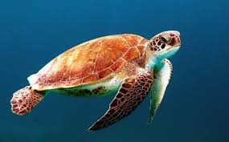

Tartaruga marinha (Cheloniidae)
A sobrevivência das tartarugas-marinhas continua em risco devido a muitos anos de caça intensiva pela sua carapaça, carne (utilizada para sopa) e gordura. Atualmente a caça está controlada, mas estes animais continuam ameaçados pelas redes de pesca que matam cerca de 40 000 exemplares por ano. Outra das maiores ameaças é o desenvolvimento costeiro nas áreas de nidificação, que impede as fêmeas de pôr os ovos e impossibilita a sua reprodução.
A maioria das espécies são migratórias e vagueiam pelos oceanos, orientando-se com a ajuda do campo magnético terrestre.